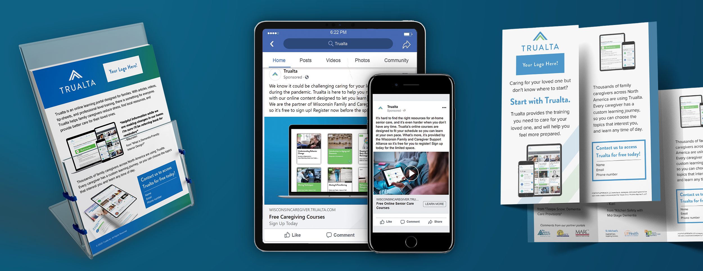

Empowering families to help loved ones age in place.
Company
Trualta
Year
2020-21
Team
Product Design
UX Design
Graphic Design
Trualta is an education healthcare start-up which helps family caregivers provide care to their aging loved ones, typically with Alzheimer's and dementia. As part of the Product Design team for Trualta, I've collaborated with all of the staff to keep branding on track, test and develop product opportunities, and organize content to be shared to client portals.
The challenge

Trualta's online platform provides courses and resources to help develop and support family caregivers, while also broadening the reach of health agencies. One of the challenges of my projects is the consideration that has to be given to those who use our platform. Our end users (those being family caregivers) are our key consideration towards the development of content and our portals, however we also require the consideration of the case managers and partners who are covering the licenses for Trualta.
Key Users
Family Caregivers
Caregivers are those who are providing care to their aging loved ones.
Some of their core needs are:
- An effective platform to learn how to provide care for their loved one.
- Something that is easy to use, and easy to access.

Case Managers
Case Managers are those who organize caregivers, and help facilitate their learning journey.
Some of their core needs are:
- Data and tracking to understand how their caregivers are doing
- Allow caregiver independence, while also maintaining contact
Some of my progress
Throughout my time working at Trualta, I've been really excited to be part of a start-up. Trualta has been in a really exciting place, with rapid growth on our horizon.
Prior to me joining Trualta, they had a strong base of content and client outreach, and was clear to see they had legs under them. From a design perspective, their platform looked intentional and professional, and served the needs of the user. What I was eager to grow was their overall design credibility, and expand on all of the great work they've done so far.
Many of my first projects were editing together video content, and outreach Graphic Design. Later, I worked more within Product Design, and creating improvements to the portal for caregivers, therefore maximizing benefit to the case managers.
My Solution
During my time working at Trualta, I've been able to make some really exciting things! Below is just a few of the things I've been up to.
Customizable Marketing Kit
Tools Used: Canva, Photoshop, InDesign
One of my key projects has been creating customizable marketing kits for partner agencies to effectively communicate the benefits Trualta can make in their lives. A big challenge of Trualta is that we can make the platform as wonderful and purposeful to the end user, but it is the case manager who needs to market our product for us for it to be successful. Chances are, they don't have too much of a design and marketing background, and that's where my expertise came in!
After searching through options online, I realized that it would be best if we could simply give case managers a library of marketing assets to support their efforts in marketing our product to their clients. This helped to not only have the case managers feel their needs supported, but this also helped to increase traffic to the portal.
2-Step Registration
Tools Used: Adobe XD, Balsamiq, Photoshop, Miro

A larger product design project of mine has been to restructure the registration process to be more open and accommodating to the caregivers. Before this project, our portal suited the needs of the user, but felt clinical. Moreover, when the family member signed up for Trualta, they would be greeted with a large registration form asking for all of their info. Instead, we looked for more welcoming opportunities of registration to not only help our caregivers get onto the platform, but to keep them coming back.
We did this by restructuring our registration flow to welcome the user. Now, when users register with Trualta, they start with a welcome video explaining the benefits of Trualta, then provide basic info like name and email. After that, the caregivers set their intention of using Trualta. This way, their motivations for the platform is brought to the forefront, and they feel prepared for the platform. Next, they pick the topic they are interested in, and they are ready to go. Later, users are asked to fill in any required info to complete registration, after they feel comfortable to do so.
Video
Tools Used: Vimeo, Premiere Pro, After Effects, Audition
There's been quite a few video projects I've played a part in at Trualta. Before starting, they had next to no video material. Throughout my time at Trualta, I've created a video intro and template for our video content. From there, I've animated, provided voice over, and overall developed many different video for case managers, caregivers, partner investors, and more.
Virtual Tradeshow
Tools Used: WordPress, Photoshop, HTML/CSS

A different sort of challenge faced at Trualta through COVID-19 is that our outreach conferences have been moved online! Typically Trualta would use our existing tradeshow booth, however we were met with a new opportunity. I had to develop a virtual tradeshow booth within WordPress that not only communicated the value of Trualta to potential agencies, but a virtual tradeshow booth that stood out among the crowd. To complete this project, I reorganized and compiled existing graphics I had developed, then implemented them into WordPress, along with custom HTML & CSS to disrupt the traditional booth designs at the show. This project resulted in Trualta having a tradeshow booth that not only would work at the conference, but could also be applied on our site for demo acquisition.
What I learned

As some more background on the project, I worked this fully remote, but the quality of team made it feel like we weren't so far apart. Working at Trualta gave me some strong insight to what I value into what I value most within a career. An ideal career to me is one where I feel valued, when I feel my work is of value to both the organization and to a larger calling, and where there is a strong understanding of a healthy work – life balance; and Trualta has been a shining showcase for that to me.